Visualisation customs
Setup
Show the code
data <- read_excel("data/results-survey3.xlsx")
data <- data[1:121] %>%
filter(.[[18]] !='Yes') # not analysed any EEG methodFamiliarity with plots
Recognition
Show the code
vec <- c("line", "butterfly", "topo", "topo_map", "topo_array", "erp_image", "parallel", "channel_image")
familiar <- data[61:68] %>% rename_at(vars(colnames(.)), ~ vec) %>%
mutate_at(vars(vec), function(., na.rm = FALSE) (x = ifelse(.=="Yes", 1, 0)))
data.frame(rowSums(t(familiar))) %>% tibble::rownames_to_column(., "plot") %>%
rename_at(vars(colnames(.)), ~ c("plot", "sum_scores")) %>%
arrange(., desc(sum_scores)) %>%
ggplot(data = ., aes(y = reorder(plot, sum_scores), x= sum_scores, fill=plot)) +
geom_bar(stat="identity") + ylab("plot") + theme_classic() +
theme(legend.position="none", plot.title = element_text(hjust = 0.5)) +
ggtitle("Select ERP plot you are familiar with") 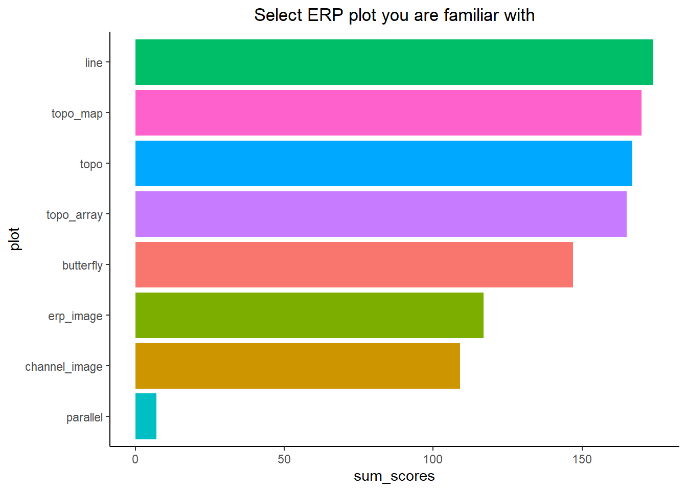
Those who named a plot somehow and those who failed to do that
Show the code
word_preproc <- function(data, N){
# N = 69
stop_list = c("a", "an", "the", "wise", "like", "s", "plot", "plots")
tmp <- data %>% filter(!is.na(.[[N]])) %>% select(., N) %>%
dplyr::rename(words = !!names(.)[1]) %>% mutate(words = tolower(words)) %>%
mutate(words_prep = str_split(words, "\\s+")) %>%
mutate(words_prep = sapply(words_prep, function(x) paste(x[!x %in% stop_list], collapse = " "))) %>%
mutate(words_prep = stri_replace_all_regex(words_prep,
pattern=c(" \\(.*", ", or.*", " across.*", " with.*", " at.*", " by.*", " over.*", #" of.*",
" for.*", " per.*", " across.*", " accross.*", " between.*"),
replacement=c(''),
vectorize=FALSE)) %>%
mutate(words_prep = str_split(words_prep, "\\s+")) %>%
mutate(words_prep = sapply(words_prep, function(x) paste(x[!x %in% stop_list], collapse = " ")))
return(tmp)
}Naming
Show the code
vec_named <- names(data[ , grepl( "How would you " , names(data))])
plot_names <- c("line", "butterfly", "topo", "topo_map", "topo_array", "erp_img", "parallel", "channel_img")
na_table <- function(data, vec){
temp <- data.frame(1:10)
for (i in vec){
temp1 <- word_preproc(data, i) %>%
mutate(words = ifelse(str_detect(words, 'idea|sure|confus|aware|do not|why'), "NA", as.character(words))) %>%
mutate(words = ifelse(nchar(words)==0, NA, words)) %>%
table(.) %>%
data.frame(.) %>% filter(words != "NA") %>%
summarise(n = sum(Freq))
temp <- cbind(temp, temp1)
}
temp <- temp[2:length(temp)]
colnames(temp) <- plot_names
return(temp)
}
num_named <- na_table(data, vec_named)
slice(num_named, 1) %>%
gather(., plots, succeeded, `line`:`channel_img`, factor_key=TRUE) %>%
mutate(failed = nrow(data) - succeeded) %>%
gather(., res, score, succeeded:failed, factor_key=TRUE) %>%
ggplot(., aes(x = plots, y = score, fill = res)) +
geom_bar(position = "dodge", stat = "identity") +
labs(x = "Category", y = "Value", fill = "Group") +
theme_classic() + theme(axis.title.x=element_blank(), plot.title = element_text(hjust = 0.5)) +
geom_text(aes(label = score, group = res), position = position_dodge(width = .9), vjust = -0.2) +
ggtitle("Plot naming")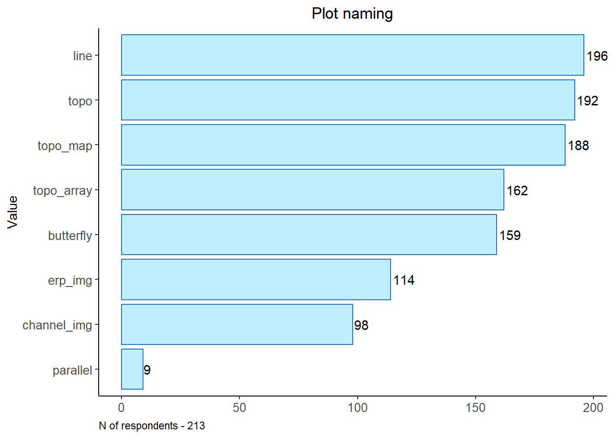
Plotting
Show the code
vec_plotted <- names(data[ , grepl( "Have you ever plotted " , names(data))])
do_vec <- function(vec_plotted, data, plot_names){
t1 <- table(data[vec_plotted[1]])
for (i in 2:length(vec_plotted)) {
t <- table(data[vec_plotted[i]])
t1 <- rbind(t1, t)
}
rownames(t1) <- plot_names #array(paste0("t_", 1:length(vec_plotted)))
return(t1)
}
tab <- do_vec(vec_plotted, data, plot_names) %>% data.frame() %>% tibble::rownames_to_column(., "plots") %>%
gather(., type, plotted, `N.A`:`Yes`, factor_key=TRUE) %>%
filter(type == "Yes") %>% dplyr::select(-type)
named <- slice(num_named, 1) %>%
gather(., plots, succeeded, `line`:`channel_img`, factor_key=TRUE)%>%
mutate(failed = nrow(data) - succeeded) %>%
dplyr::rename(named = succeeded) %>%
dplyr::select(-failed)
familiar <- data[61:68] %>% rename_at(vars(colnames(.)), ~ plot_names) %>%
mutate_at(vars(plot_names), function(., na.rm = FALSE) (x = ifelse(.=="Yes", 1, 0)))
mem_tab <- data.frame(rowSums(t(familiar))) %>% tibble::rownames_to_column(., "plot") %>%
rename_at(vars(colnames(.)), ~ c("plots", "recognized")) %>%
merge(., named) %>% left_join(., tab)
mem_tab %>% #filter(plots != "parallel") %>%
gather(., type, score, recognized:plotted, factor_key=TRUE) %>%
ggplot(., aes(x = reorder(plots, -score), y = score, fill = type)) +
geom_bar(position = "dodge", stat = "identity") +
labs(x = "Plot type", y = "Number of users", fill = "Level of\nfamiliarity\nwith plot") +
theme_classic() + geom_text(aes(label = score, group = type), position = position_dodge(width = .9), vjust = -0.2) + theme(plot.title = element_text(hjust = 0.5)) +
ggtitle("Familiarity with plots")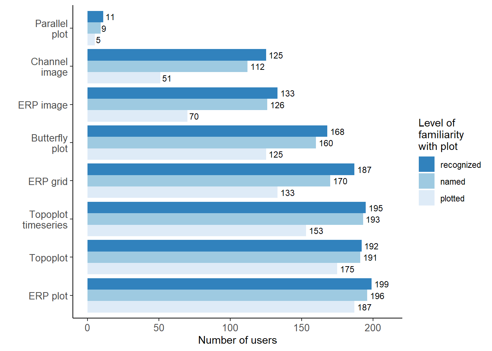
named correctly
Channels
How many channels do you typically measure?
Show the code
data %>% ggplot(data = ., aes_(as.name(names(data)[23]))) +
geom_histogram(bins=300) + scale_x_continuous(breaks=seq(0, 300, 30)) +
labs(x ="How many channels do you typically measure?") + theme_classic()
How many channels do you typically analyse?
Show the code
data %>% filter(.[[24]] < 500) %>% ggplot(data = ., aes_(as.name(names(data)[24]))) +
geom_histogram(bins=300) + scale_x_continuous(breaks=seq(0, 300, 30))+
labs(x ="How many channels of those you measured do you typically analyse?") + theme_classic()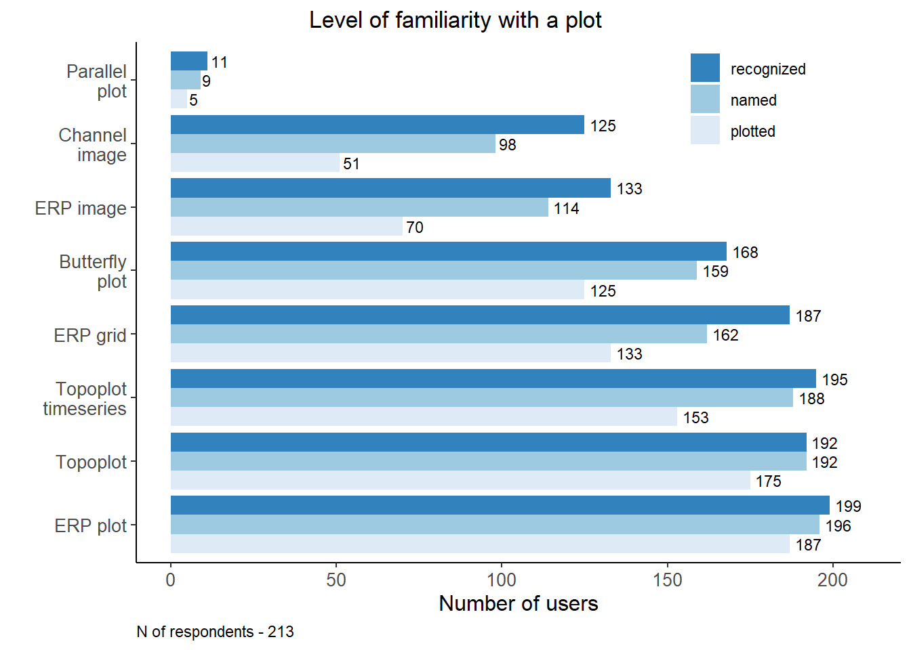
Combined version
Show the code
data %>% select(23, 24) %>%
rename_at(vars(colnames(.)), ~ c("measure", "analyse")) %>%
filter(analyse < 500) %>%
gather(key=Type, value=Value) %>%
ggplot(aes(x=Value, fill=Type)) +
geom_histogram(bins=300, position="stack") + labs(x ="Number of channels") +
theme_classic()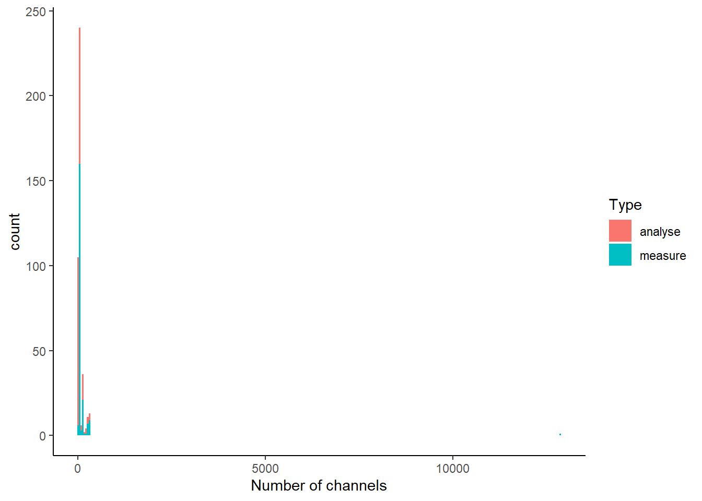
Show the code
data %>% select(23, 24) %>%
rename_at(vars(colnames(.)), ~ c("measure", "analyse")) %>%
filter(analyse < 500) %>%
gather(key=Type, value=Value) %>%
ggplot(aes(x=Value, fill=Type)) +
geom_histogram(bins=100, position="dodge") + labs(x ="Number of channels") +
theme_classic()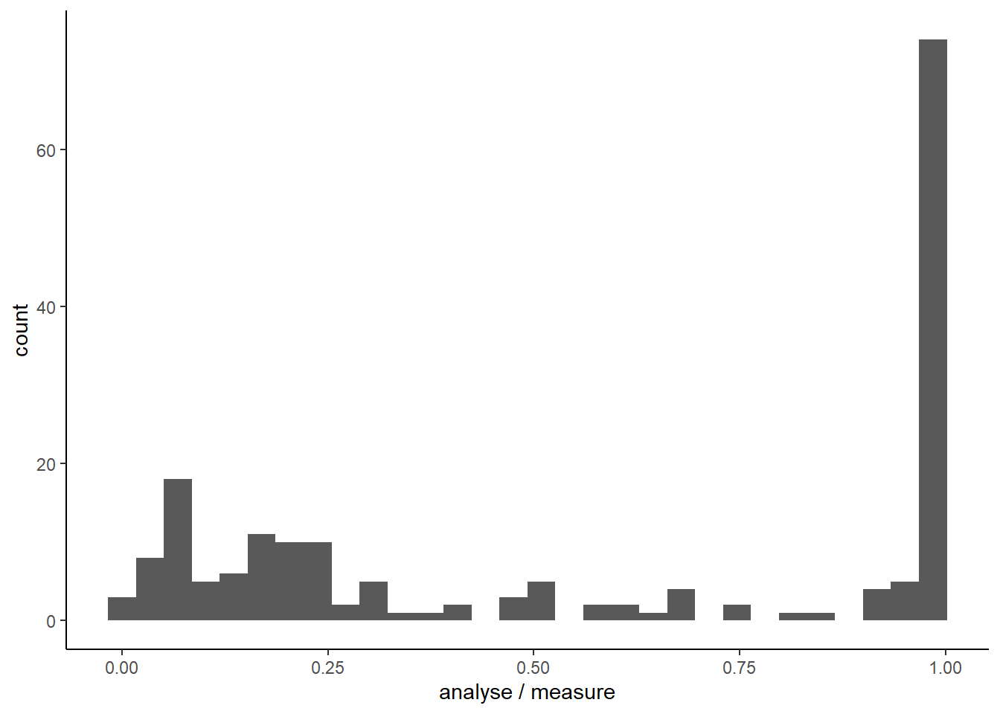
Show the code
data %>% select(23, 24) %>%
rename_at(vars(colnames(.)), ~ c("measure", "analyse")) %>%
filter(analyse < 500) %>%
mutate(rate = analyse / measure) %>%
ggplot(aes(x=rate)) +
geom_histogram(bins=300) + labs(x ="analyse / measure") +
theme_classic()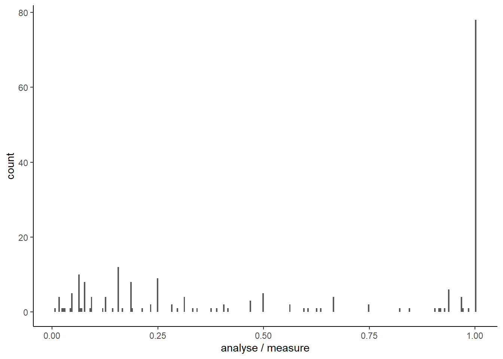
Show the code
data %>% select(23, 24) %>%
rename_at(vars(colnames(.)), ~ c("measure", "analyse")) %>%
filter(analyse < 500) %>%
mutate(rate = analyse / measure) %>%
mutate(rate_ms = factor(ifelse(rate < 0.5, "lower median", "higher median")), quartile = cut(rate, 4)) %>%
group_by(quartile) %>%
dplyr::summarise(n = n()) %>% ungroup() %>% mutate(perc = round(n / sum(n), 2) * 100) %>%
ggplot(aes(x=quartile, y = perc, fill = quartile)) + geom_bar(stat = "identity", width=0.5) +
theme_classic() + labs(x ="analyse / measure")+
theme(legend.position="none",
axis.text = element_text(size = 12),
plot.title = element_text(hjust = 0.5)) +
geom_text(aes(label = paste0(perc, "%")), position = position_stack(vjust = 0.5), size = 6) 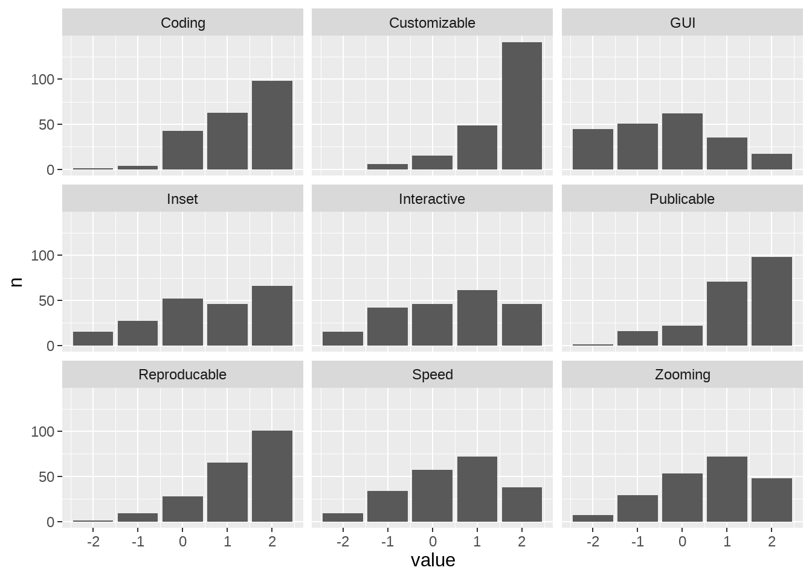
Show the code
data %>% select(23, 24) %>%
rename_at(vars(colnames(.)), ~ c("measure", "analyse")) %>%
filter(analyse < 500) %>% ggplot(., aes(measure, analyse)) + geom_point() + theme_classic() +
scale_x_continuous(breaks = seq(0, 300, by = 20)) + scale_y_continuous(breaks = seq(0, 300, by = 20))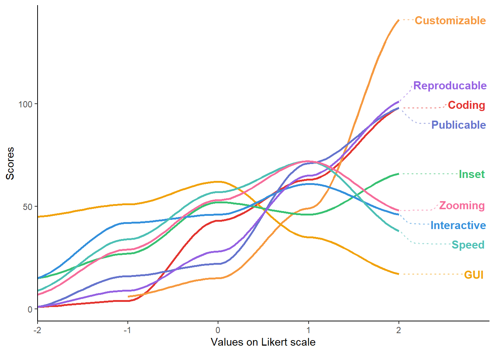
Software usage
Frequency
Show the code
na.omit(data[51]) %>% nrow()[1] 21Show the code
other <- c(rep("Custom scripts",each=9), "4DBTi", rep("letswave", 3), "mTRF", "RAGU", "IGOR Pro", "EEGProcessor", "ELAN", "WinEEG") %>% table(.) %>% data.frame(.) %>% rename_at(vars(colnames(.)), ~ c("soft", "sum_scores"))Show the code
vec <- names(data[25:50]) %>% str_split_i(., "\\? \\[", 2) %>% str_sub(., 1, -2)
software <- data[25:50] %>%
rename_at(vars(colnames(.)), ~ vec) %>%
mutate_at(vars(vec), function(., na.rm = FALSE) (x = ifelse(.=="Yes", 1, 0))) %>%
cbind(., data[51] %>% rename_at(vars(colnames(.)), ~ c("other"))) %>% mutate(other = case_when(
grepl("\\b(letswave)\\b", other, ignore.case = TRUE) == TRUE ~ "Letswave",
grepl("\\b(r|matlab|python|ggplot(2)?|own)\\b", other, ignore.case = TRUE) == TRUE ~ "Custom scripts",
grepl("\\bnever\\b", other, ignore.case = TRUE) == TRUE ~ NA_character_,
TRUE ~ as.character(other)
)) %>%
mutate(cs = ifelse(other == "Custom scripts", other, NA_character_),
other2 = ifelse(other != "Custom scripts", other, NA_character_)) %>%
mutate(`Custom scripts` = case_when(
cs == "Custom scripts" ~ as.numeric(1),
TRUE ~ as.numeric(`Custom scripts`)
)) %>%
mutate(Letswave = case_when( #gross
other2 == "Letswave" ~ as.numeric(1),
TRUE ~ as.numeric(0)
)) %>% dplyr::select(-cs, -other, -other2) # next time I also will extend other 2 too
d <- data.frame(rowSums(t(software))) %>% tibble::rownames_to_column(., "soft") %>%
rename_at(vars(colnames(.)), ~ c("soft", "sum_scores")) #%>%
# rbind(., other) %>% # not sure is it correct
# dplyr::group_by(soft) %>% dplyr::summarise(sum_scores = sum(sum_scores)) %>%
# arrange(., desc(sum_scores))Show the code
d %>% filter(sum_scores != 0) %>%
mutate(soft = ifelse(sum_scores >= 3, as.character(soft), "_Others")) %>% group_by(soft) %>%
dplyr::summarise(sum_scores = sum(sum_scores)) %>% ungroup() %>%
mutate(percent_score = round(sum_scores / sum(sum_scores) * 100)) %>%
ggplot(data = ., aes(y = reorder(soft, percent_score), x= percent_score, fill = soft)) +
geom_bar(stat="identity") + labs(x= "Scores", y="Analytical tools") +
geom_text(aes(label = paste0(percent_score, "%")),
position = position_stack(vjust = 0.5), size = 4) + theme_classic() + theme(legend.position="none", axis.text.y = element_text(size = 14))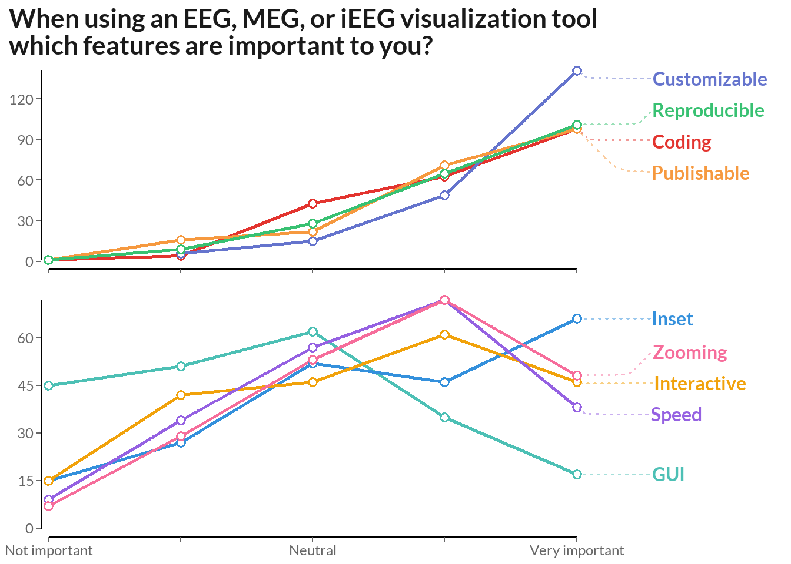
Monousers
Soft frequency among thoses who used only one software
Show the code
ns <- cbind(data.frame(rowSums(software), software)) %>%
filter(rowSums.software. == 1) %>% dplyr::select(-rowSums.software.)
data.frame(rowSums(t(ns))) %>%
tibble::rownames_to_column(., "soft") %>%
rename_at(vars(colnames(.)), ~ c("soft", "sum_scores")) %>%
arrange(., desc(sum_scores)) %>% filter(sum_scores != 0) soft sum_scores
1 MNE.Python 11
2 FieldTrip 8
3 EEGLAB 7
4 Custom.scripts 2
5 Brain.Vision.Analyser 1
6 ERPLAB 1
7 SPM. 1Number of used tools
Show the code
data.frame(rowSums(software)) %>% dplyr::rename(n_soft = rowSums.software.) %>%
ggplot(data = ., aes(n_soft)) +
geom_histogram(bins = 45) + scale_x_continuous(breaks=seq(0, 30, 1)) +
labs(x ="Number of software used", y="Count") +
theme_classic() + theme(legend.position="none", axis.text.x = element_text(size = 12)) 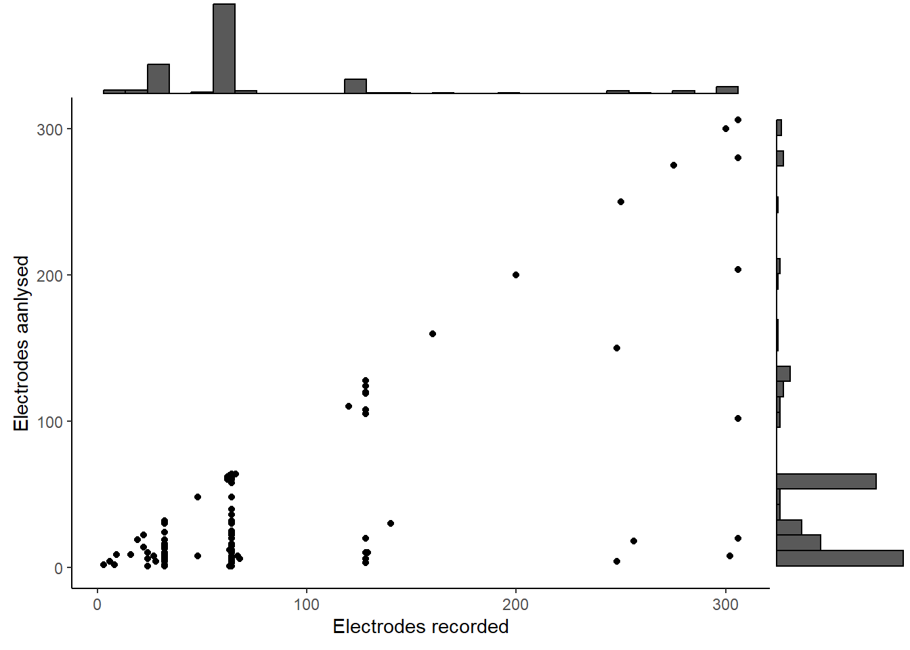
Show the code
data.frame(rowSums(software)) %>% dplyr::rename(n_soft = rowSums.software.) %>% summarise(median_n_soft = median(n_soft)) median_n_soft
1 3Cooccurrence
Show the code
# how to order by diagonal matrix
# how to add others
software <- data[25:50]
ch <- colnames(software)
ch1 <- foreach(i = ch) %do% str_split_i(i, "\\? \\[", 2)
ch1 <- foreach(i = ch1) %do% str_sub(i, 1, -2)
d1 <- foreach(i = colnames(software)) %do% ifelse(software[i]=="Yes", 1, 0)
c <- crossprod(matrix(unlist(d1), ncol = 26))
rownames(c) <- ch1
colnames(c) <- rownames(c)
diag.order <- order(diag(c), decreasing = FALSE)
mat_reordered <- c[diag.order, diag.order]
melt(mat_reordered) %>% ggplot(., aes(x=Var1, y=Var2)) +
geom_tile(aes(fill = value)) +
geom_text(aes(label = value)) +
scale_fill_gradient(low = "white", high = "red") +
theme(legend.title = element_blank(),
axis.title=element_blank(),
axis.text.x = element_text(angle = 90, vjust = 1, hjust=1)) 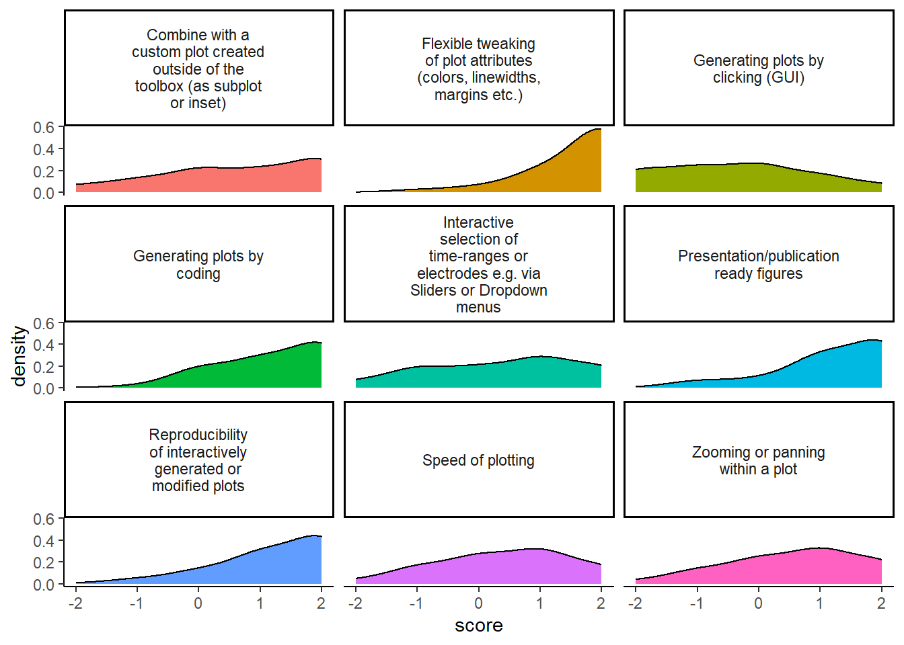
Show the code
zero_rows <- rowSums(mat_reordered) == 0
zero_cols <- colSums(mat_reordered) == 0
# Create a new matrix array without the rows and columns consisting only of zeroes
new_matrix <- mat_reordered[!zero_rows, !zero_cols]
melt(new_matrix) %>% ggplot(., aes(x=Var1, y=Var2)) +
geom_tile(aes(fill = value)) +
geom_text(aes(label = value)) +
scale_fill_gradient(low = "white", high = "red") +
theme(legend.title = element_blank(),
axis.title=element_blank(),
axis.text.x = element_text(angle = 90, vjust = 1, hjust=1)) 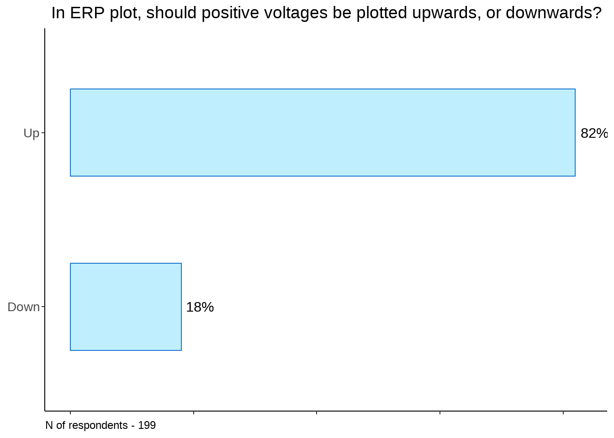
Important features
Show the code
feature <- data[52:60] %>% rename_all(., ~str_split_i(colnames(data[52:60]), "\\? \\[", 2) %>%
str_sub(., 1, -2) ) %>%
mutate_at(c(colnames(.)),
funs(recode(.,
"Very important"= 2, "Important"= 1, "Neutral"= 0,
"Low importance"= -1, "Not at all important" = -2 )))
feature %>%
colSums(., na.rm =T) %>% data.frame(.) %>% tibble::rownames_to_column(., "Feature") %>%
filter(!is.na(Feature)) %>%
arrange(desc(.)) %>% rename_at(vars(colnames(.)), ~ c("Feature", "sum_scores")) %>% group_by(Feature) %>%
dplyr::mutate( mean = round(sum_scores / nrow(data), 2)) %>% kbl(escape = F, booktabs = T) %>%
kable_styling("striped", position = "center",) %>% kable_classic(full_width = F, html_font = "Arial")| Feature | sum_scores | mean |
|---|---|---|
| Flexible tweaking of plot attributes (colors, linewidths, margins etc.) | 292 | 1.56 |
| Presentation/publication ready figures | 226 | 1.21 |
| Reproducibility of interactively generated or modified plots | 223 | 1.19 |
| Generating plots by coding | 221 | 1.18 |
| Combine with a custom plot created outside of the toolbox (as subplot or inset) | 116 | 0.62 |
| Zooming or panning within a plot | 109 | 0.58 |
| Speed of plotting | 80 | 0.43 |
| Interactive selection of time-ranges or electrodes e.g. via Sliders or Dropdown menus | 72 | 0.39 |
| Generating plots by clicking (GUI) | -68 | -0.36 |
Show the code
feature1 <- feature %>%
pivot_longer(cols = everything(), names_to = "name", values_to = "value") %>%
mutate(index = as.integer(factor(name))) %>%
filter(!is.na(value))
#feature %>% distinct(., index, name) %>% arrange(., index)
feature1 %>% #filter(index %in% c(2, 6, 7, 4)) %>%
ggplot() +
geom_density(aes(x = value, fill = str_wrap(name)), bw = 0.5) +
labs(x = "score", fill="Features") + theme_classic() +
theme(legend.position = "none", legend.key.height=unit(2, "cm")) + facet_wrap(~str_wrap(name, 20))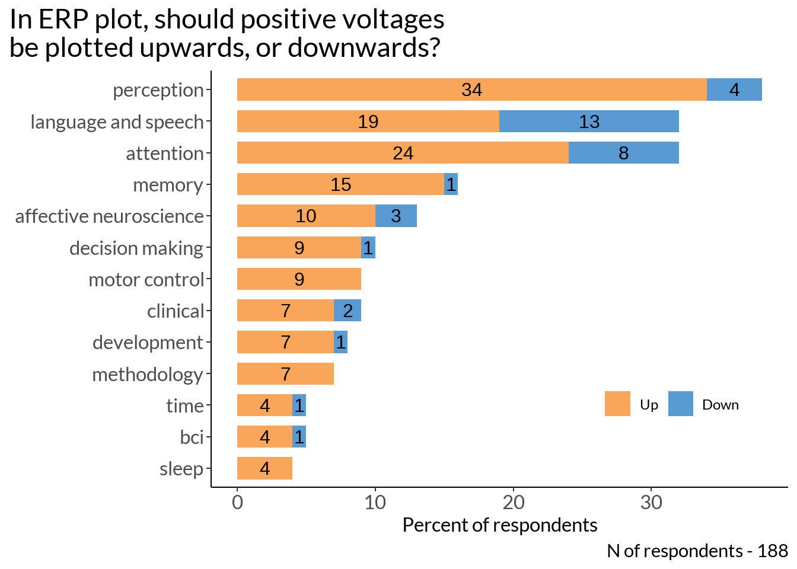
Show the code
feature1 %>% filter(index %in% c(2, 6, 7, 4)) %>%
ggplot() +
geom_density(aes(x = value, color = str_wrap(name, 20)), bw = 0.5) +
labs(x = "score", color = "Features") + theme_classic() +
theme(legend.position = "none",
legend.key.height=unit(2, "cm"),
axis.text.x = element_text(size = 12),
strip.text = element_text(size = 14)) +
facet_wrap(~str_wrap(name, 20)) + labs(x="Scores on Likert scale", y="Density") 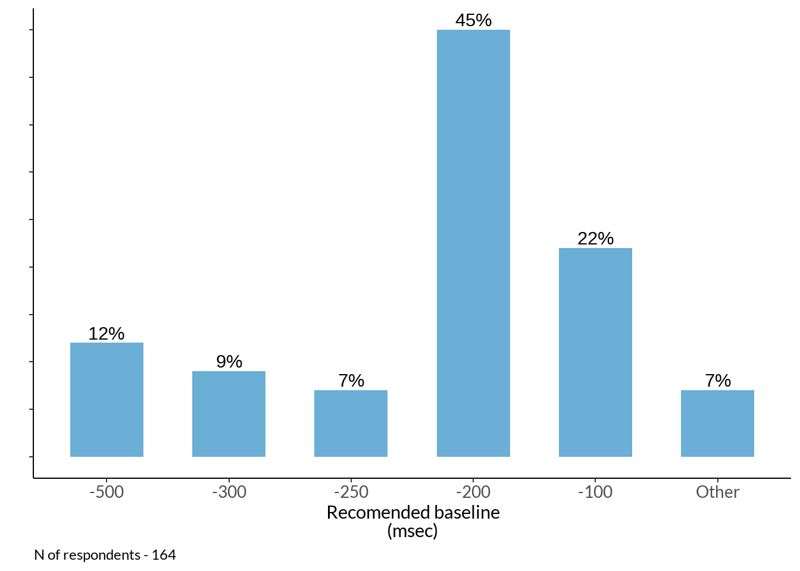
Show the code
feature1 %>% filter(index %in% c(2, 6, 7, 4)) %>%
ggplot() +
stat_density(aes(x = value, color = str_wrap(name, 20)),
geom="line", position="identity", bw = 0.5, size = 1) +
labs(x = "score", color = "Features") + theme_classic() +
theme(
legend.key.height=unit(1, "cm"),
legend.text = element_text(color = "black"),
axis.text = element_text(size = 14),
strip.text = element_text(size = 14)) +
labs(x="Scores on Likert scale", y="Density") 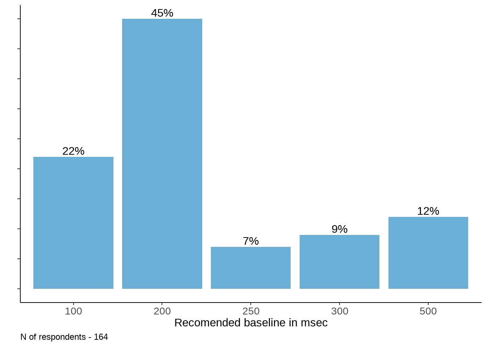
Show the code
feature1 %>% filter(index %in% c(8, 9)) %>%
ggplot() +
stat_density(aes(x = value, color = str_wrap(name, 20)),
geom="line", position="identity", bw = 0.5, size = 1) +
labs(x = "score", color ="Features") + theme_classic() +
theme(
legend.key.height=unit(1, "cm"),
legend.text = element_text(color = "black"),
axis.text = element_text(size = 14),
strip.text = element_text(size = 14)) +
labs(x="Scores on Likert scale", y="Density") 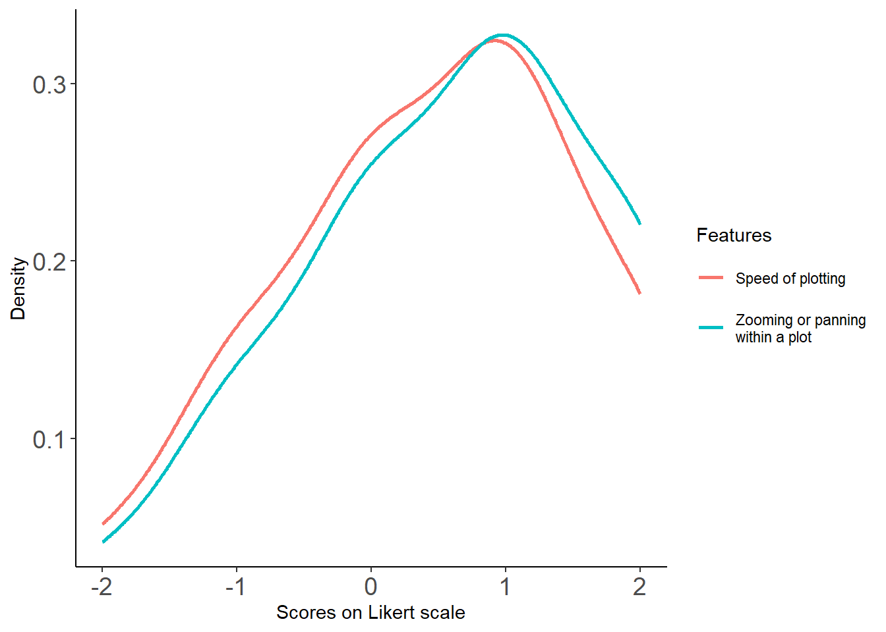
Show the code
feature1 %>% filter(index %in% c(1, 3, 5)) %>%
ggplot() +
stat_density(aes(x = value, color = str_wrap(name, 20)),
geom="line", position="identity", bw = 0.5, size = 1) +
labs(x = "score", color ="Features") + theme_classic() +
theme(
legend.key.height=unit(1, "cm"),
legend.text = element_text(color = "black"),
axis.text = element_text(size = 14),
strip.text = element_text(size = 14)) +
labs(x="Scores on Likert scale", y="Density") 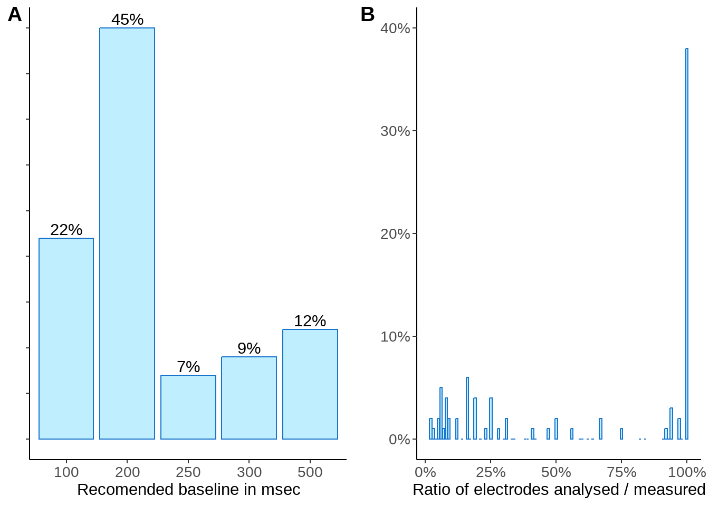
Up or down
Show the code
t <- foreach(i = 1:nrow(data)) %do% tokenize_words(as.character(data[i, 11]))
tt <- foreach(i = 1:length(t)) %do% paste(unlist(t[i]), collapse = ' ')
area1 <- data.frame(matrix(tt)) %>% dplyr::rename(words = !!names(.)[1]) %>%
mutate(words = ifelse(str_detect(.[[1]], 'emot|empathy'), "affective neuroscience", words)) %>%
mutate(words =ifelse(str_detect(.[[1]], 'memory'), "memory", words)) %>%
mutate(words =ifelse(str_detect(.[[1]], 'hearing|audit'), "auditory", words)) %>%
mutate(words =ifelse(str_detect(.[[1]], 'cognitive load|selective attention|attention|cognition|consciousness|meditation|cognitive control|self|executive functions'), "cognitive control and attention", words)) %>%
mutate(words =ifelse(str_detect(.[[1]], 'dbs'), "deep brain stimulation", words)) %>%
mutate(words =ifelse(str_detect(.[[1]], 'decision making|reward'), "decision making", words)) %>%
mutate(words =ifelse(str_detect(.[[1]], 'ageing'), "ageing", words)) %>%
mutate(words =ifelse(str_detect(.[[1]], 'social'), "social cognition", words)) %>%
mutate(words =ifelse(str_detect(.[[1]], 'olfac'), "olfaction", words)) %>%
mutate(words =ifelse(str_detect(.[[1]], 'communication|language|speech|biling|english|language processing'), "language and speech", words)) %>%
mutate(words =ifelse(str_detect(.[[1]], 'bci'), "bci", words)) %>%
mutate(words =ifelse(str_detect(.[[1]], 'sleep'), "sleep", words)) %>%
mutate(words =ifelse(str_detect(.[[1]], 'timing|time|temporal'), "time", words)) %>%
mutate(words =ifelse(str_detect(.[[1]], 'perception'), "perception", words)) %>%
mutate(words =ifelse(str_detect(.[[1]], 'vis'), "vision", words)) %>%
mutate(words =ifelse(str_detect(.[[1]], 'developmental|development|ageing'), "development", words)) %>%
mutate(words =ifelse(str_detect(.[[1]], 'spatial|brain body|motor|motion'), "motor control", words)) %>%
mutate(words =ifelse(str_detect(.[[1]], 'diagnostics|disorder|psychiatry|epilepsy|autism|patients|therapy|psychopharmacology'), "mental disorders", words)) %>%
mutate(words =ifelse(str_detect(.[[1]], 'signal processing|event related potentials|method|sdf|ieeg'), "dsp", words))
area <- area1 %>%
mutate(words = ifelse(str_detect(.[[1]], 'olfaction|vision|auditory|pain'), "perception", words))%>%
mutate(words = ifelse(str_detect(.[[1]], 'dsp|computational neuroscience'), "methodology", words)) %>%
mutate(words = ifelse(str_detect(.[[1]], 'mental disorders|deep brain stimulation'), "clinical", words))%>%
mutate(words = ifelse(str_detect(.[[1]], 'social cognition'), "affective neuroscience", words))Show the code
table(data[79]) %>% data.frame() %>%
rename_at(vars(colnames(.)), ~ c("position", "scores")) %>%
mutate(percent_score = round(scores / sum(scores) * 100)) %>%
ggplot(., aes(x = position, y = percent_score, fill = as.factor(percent_score))) +
geom_bar(position = "dodge", stat = "identity", width=0.5) +
theme_classic() +
theme(axis.title.x=element_blank(),
legend.position="none",
axis.text = element_text(size = 12),
plot.title = element_text(hjust = 0.5)) +
geom_text(aes(label = paste0(percent_score, "%"), group = position),
position = position_stack(vjust = 0.5)) +
ggtitle("In ERP plot, should positive voltages be plotted upwards, or downwards?")
Show the code
cbind(unlist(area$words), unlist(data[[79]])) %>% data.frame() %>%
filter(.[[2]] != "NANA") %>% dplyr::rename(area=X1, ud=X2) %>%
group_by(area) %>%
filter(n() > 2) %>% group_by(area, ud) %>% dplyr::summarise(n = n()) %>%
group_by(area) %>% dplyr::mutate(nn = sum(n)) %>%
ggplot(., aes(x = n, y = reorder(area, nn), fill = ud)) +
geom_col(stat = "identity", width = 0.5) +
labs(x = "Count", y = "area of study", fill ="Positive:") +
geom_text(aes(label = n, #paste0(n, "%"),
group = ud),
position = position_stack(vjust = 0.5)) +
theme(plot.title = element_text(hjust = 0.5),
axis.text = element_text(size = 12),
axis.title = element_text(size = 14, face = "bold"),
legend.title = element_blank(),
axis.title.y=element_blank()
) +
theme_classic()
Error bars
Show the code
table(data[74]) %>% data.frame() %>% rename_at(vars(colnames(.)), ~ c("position", "Scores")) %>%
filter(position != "Never published this plot") %>% mutate(sum = sum(Scores)) position Scores sum
1 No 57 141
2 Yes 84 141Show the code
table(data[74]) %>% data.frame() %>% rename_at(vars(colnames(.)), ~ c("position", "Scores")) %>% mutate(percent_score = round(Scores / sum(Scores) * 100)) %>%
ggplot(., aes(x = position, y = percent_score, fill = as.factor(percent_score))) +
geom_bar(position = "dodge", stat = "identity", width=0.5) + theme_classic() +
theme(axis.title.x=element_blank(),
legend.position="none",
axis.text = element_text(size = 12),
plot.title = element_text(hjust = 0.5)) +
geom_text(aes(label = paste0(percent_score, "%"), group = position), position = position_stack(vjust = 0.5), size = 6) +
ggtitle("In your paper, did you published ERP plot with error bars?")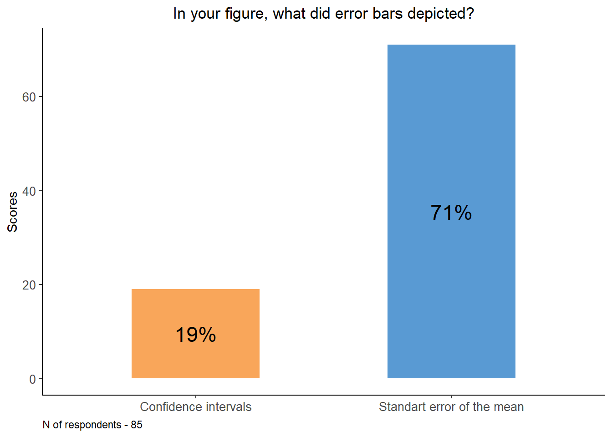
Never published - throw them away
Show the code
table(data[74]) %>% data.frame() %>% rename_at(vars(colnames(.)), ~ c("position", "Scores")) %>%
filter(position != "Never published this plot") %>%
mutate(percent_score = round(Scores / sum(Scores) * 100)) %>%
ggplot(., aes(x = position, y = percent_score, fill = as.factor(percent_score))) +
geom_bar(position = "dodge", stat = "identity", width=0.5) + theme_classic() +
theme(axis.title.x=element_blank(),
legend.position="none",
axis.text = element_text(size = 12),
plot.title = element_text(hjust = 0.5)) +
geom_text(aes(label = paste0(percent_score, "%"), group = position), position = position_stack(vjust = 0.5), size = 6) +
ggtitle("In your paper, did you published ERP plot with error bars?")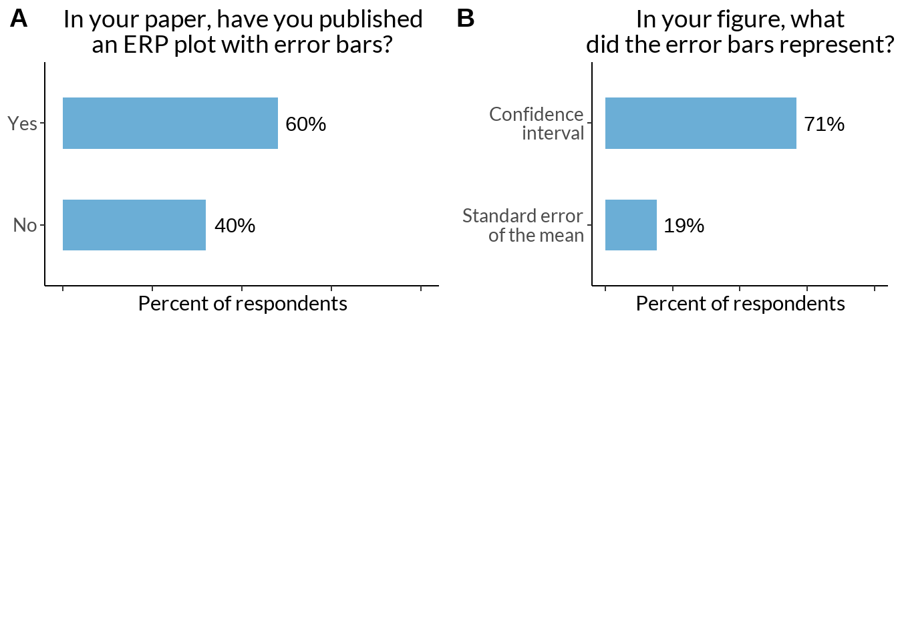
Show the code
data[75] %>% filter(!is.na(.)) %>% table() %>% data.frame() %>% rename_at(vars(colnames(.)), ~ c("position", "scores")) %>% mutate(percent_score = round(scores / sum(scores) * 100)) %>% filter(position != "Other") %>%
ggplot(., aes(x = position, y = percent_score, fill = as.factor(percent_score))) +
geom_bar(position = "dodge", stat = "identity", width=0.5) + theme_classic() +
theme(axis.title.x=element_blank(),
legend.position="none",
axis.text = element_text(size = 12),
plot.title = element_text(hjust = 0.5)) + ylab("Scores") +
geom_text(aes(label = paste0(percent_score, "%"), group = position), position = position_stack(vjust = 0.5), size = 6) +
ggtitle("In your figure, what did error bars depicted?")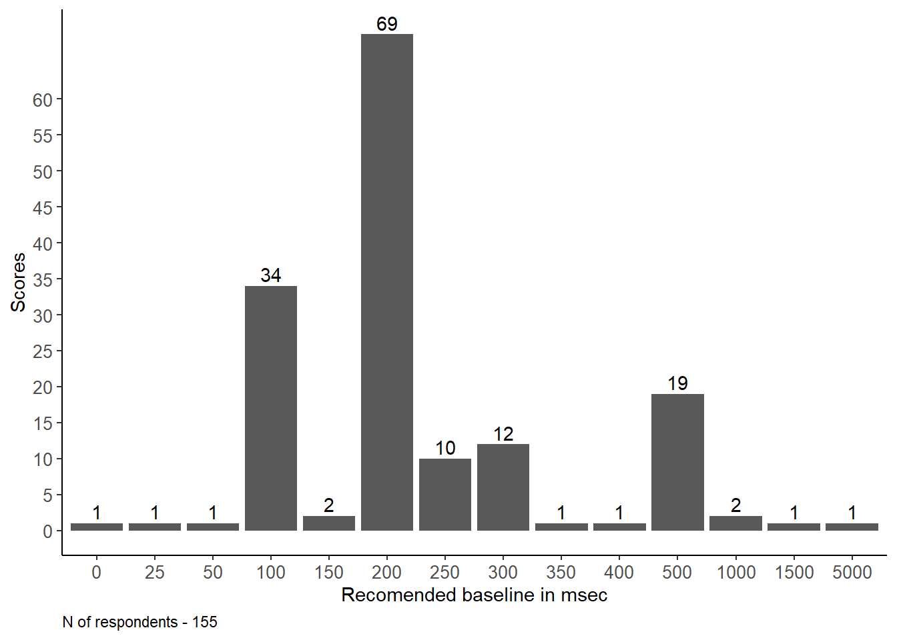
Show the code
data[76] %>% filter(!is.na(.)) %>% table()G03Q15[other]. What did the error bars depict in your figure? [Other]
68% CI, which is close to SEM under normality
1
95% ci over channel means
1
i'm not sure but i think it was sem
1
median absolute deviaton or quantiles
1
Sd
1
SEM, corrected for within-participant design
1 Baseline
periods
Show the code
table(abs(data[77])) %>% data.frame() %>% dplyr::rename(baseline = !!names(.)[1]) %>%
ggplot(data = ., aes(x = baseline, y= Freq)) +
geom_bar(stat="identity") + xlab("Recomended baseline in msec") +
scale_y_continuous(breaks=seq(0, 60, 5)) + theme_classic() +
theme(legend.position="none", plot.title = element_text(hjust = 0.5)) +
geom_text(aes(label = Freq, group = baseline), position = position_dodge(width = .9), vjust = -0.2)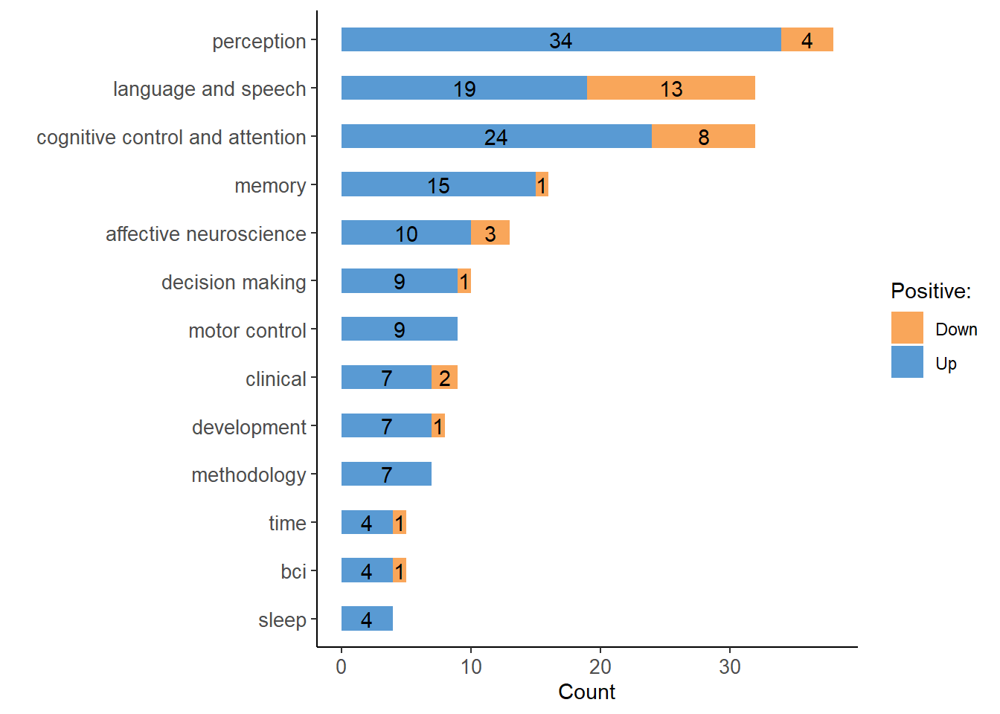
justification
Show the code
# If you don't want to provide a number on previous question, please, provide a justification
# depends on what??
# manual categorization of depending
j <- data %>%
dplyr::rename(q = !!names(.)[78]) %>% filter(!is.na(q)) %>% dplyr::select(q) %>%
mutate(q = tolower(q)) %>% mutate(q = gsub('depends in|depending on', 'depends on', q),
dependson = ifelse(grepl("depends|depend", q), q, NA)) %>%
separate(dependson, into = c("a","b"), sep = "depends on |depend on ") %>%
dplyr::select(-a) %>%
dplyr::rename(dependson = b) #%>%
j %>% filter(!is.na(dependson)) %>% select(dependson)# A tibble: 33 × 1
dependson
<chr>
1 "the design of course"
2 "the topic"
3 "the study. if you have interstimulus interval of 1 second and you expect to…
4 "the experiment and research question"
5 "the rest period between the measured evoked responses. e.g. it can be very …
6 "the analysis"
7 "paradigm, 100-300 ms range preferable"
8 "the task design"
9 "the type of response (eg for mrcps response is seen before actual movement …
10 "the task design, paradigm and signal of interest."
# … with 23 more rowsShow the code
j %>% filter(is.na(dependson)) %>% select(-dependson)# A tibble: 18 × 1
q
<chr>
1 minimum 200ms for erps and theta or beta power
2 should match the duration of baseline-correction
3 as a rule of thumb, i would plot at least 1/3 of the duration (post-stimulus…
4 half of the illustrated task interval
5 in general i would always try to plot the full baseline period used for base…
6 the same duration as the one used for baseline correction
7 at least 300, preferably more
8 put down 100, but that's just what i typically use, might be diff for differ…
9 at least the baseline window used for the baseline correction?
10 in this case it has sense as the -100 : 0 ms is not flat
11 1/3 to 1/2 of the post-stimulus time plotted
12 i would plot the same baseline period as the one used for baseline correction
13 i would recommend to plot the baseline period corresponding to the baseline-…
14 in general, i think it should be roughly the same length as the time window …
15 assuming the baseline is -250 to 0 ms, i would like to see activity before t…
16 the actual baseline length you have in the experiment
17 ideally, the entire duration for the baseline correction should be depicted
18 it depends - at least as long as the period you use for correction (which ma…Show the code
#View()Colorbars
Show the code
table(data[117]) %>% data.frame() %>% rename_at(vars(colnames(.)), ~ c("position", "scores")) %>%
ggplot(., aes(x = position, y = scores, fill = as.factor(scores))) +
geom_bar(position = "dodge", stat = "identity", width=0.5) + theme_classic() +
theme(axis.title.x=element_blank(), legend.position="none", plot.title = element_text(hjust = 0.5)) +
geom_text(aes(label = scores, group = position), position = position_dodge(width = .9), vjust = -0.2) +
ggtitle("Are you aware of perceptual controvericies of colorbars?")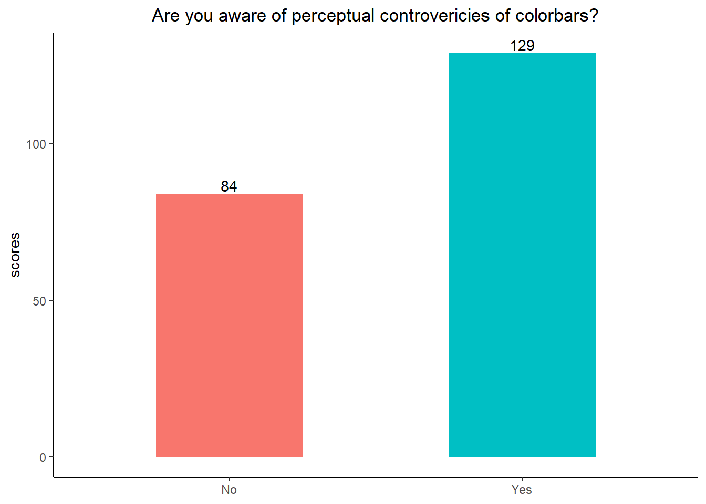
Show the code
table(data[118]) %>% data.frame() %>% rename_at(vars(colnames(.)), ~ c("position", "scores")) %>%
ggplot(., aes(x = position, y = scores, fill = as.factor(scores))) +
geom_bar(position = "dodge", stat = "identity", width=0.5) + theme_classic() +
theme(axis.title.x=element_blank(), legend.position="none", plot.title = element_text(hjust = 0.5)) +
geom_text(aes(label = scores, group = position), position = position_dodge(width = .9), vjust = -0.2) +
ggtitle("Do you know about two-dimensional colorbars?")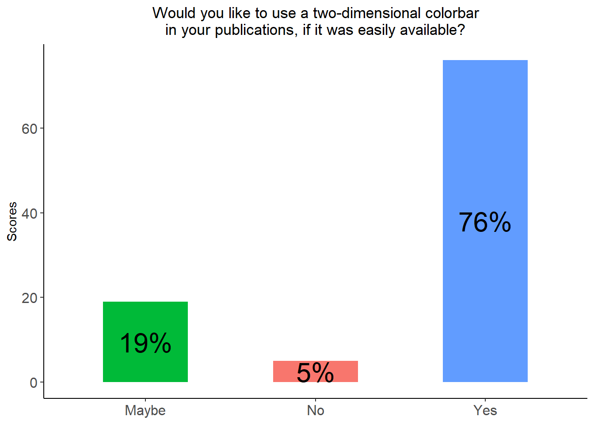
Show the code
rbind(table(data[117]) %>% data.frame() %>%
rename_at(vars(colnames(.)), ~ c("answer", "scores")) %>%
mutate(questions = "Awareness about\ncontrovercies of\ncolorbars")%>%
mutate(percent_score = round(scores / sum(scores) * 100)),
table(data[118]) %>% data.frame() %>%
rename_at(vars(colnames(.)), ~ c("answer", "scores")) %>%
mutate(questions = "Awareness about\n2d colorbars") %>%
mutate(percent_score = round(scores / sum(scores) * 100))
) %>%
ggplot(., aes(x = percent_score, y = questions, fill = answer)) +
geom_col(stat = "identity", width = 0.5) +
geom_text(aes(label = paste0(percent_score, "%", "\n(", answer, ")")),
position = position_stack(vjust = 0.5), size = 4) +
theme_classic()+
theme(plot.title = element_text(hjust = 0.5),
axis.text = element_text(size = 12),
axis.title = element_text(size = 14, face = "bold"),
legend.position = "none",
legend.title = element_blank(),
axis.title.y=element_blank()
) +
scale_color_manual(values = c("#FF6666", "#66CC66")) +
scale_fill_manual(values = c("#FF6666", "#66CC66")) +
labs(x="Percent score")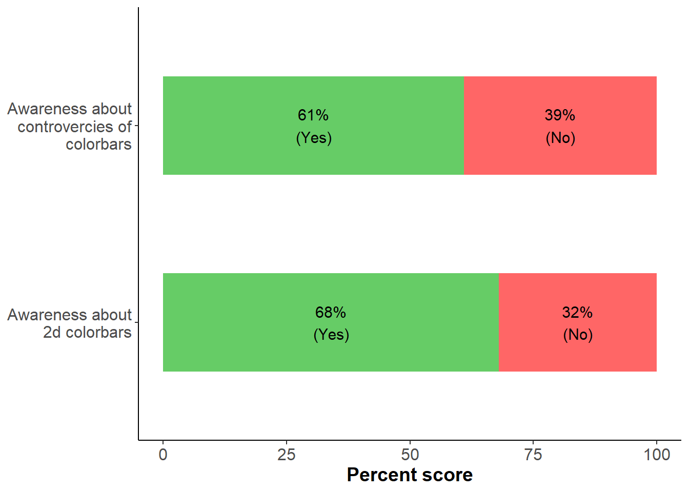
Show the code
table(data[119]) %>% data.frame() %>% rename_at(vars(colnames(.)), ~ c("position", "scores")) %>%
mutate(percent_score = round(scores / sum(scores) * 100)) %>%
ggplot(., aes(x = position, y = percent_score, fill = as.factor(percent_score))) +
geom_bar(stat = "identity", width=0.5) + theme_classic() +
theme(axis.title.x=element_blank(),
legend.position="none",
axis.text = element_text(size = 12),
plot.title = element_text(hjust = 0.5)) + ylab("Scores") +
geom_text(aes(label = paste0(percent_score, "%") ,
group = position), position = position_stack(vjust = 0.5), size = 8) +
ggtitle("Would you like to use a two-dimensional colorbar\nin your publications, if it was easily available?")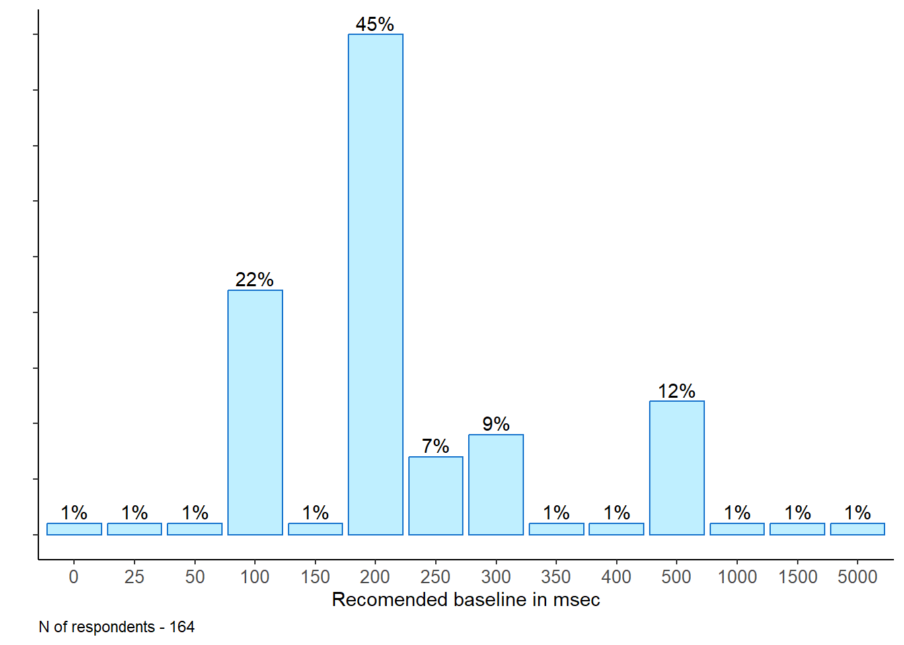